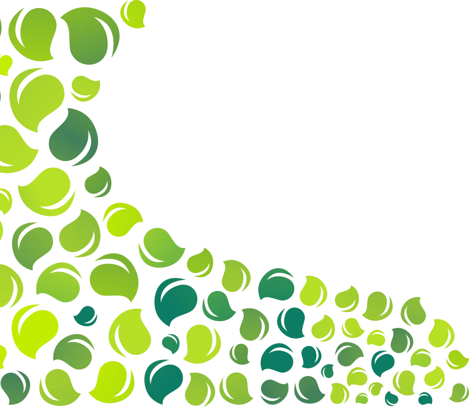
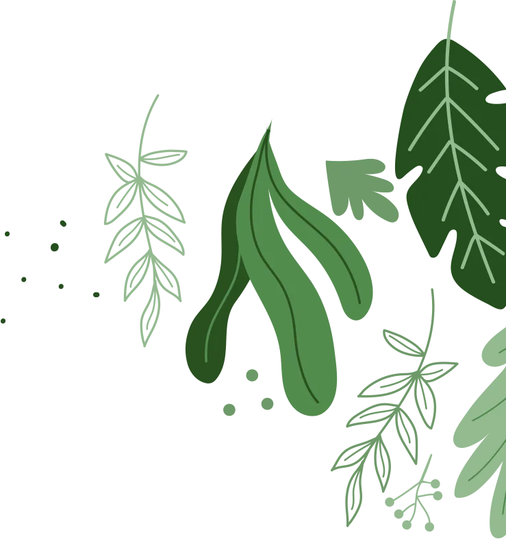
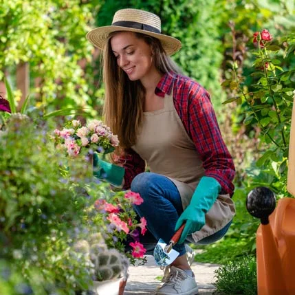

Voices from Farmers and Collaborators
What Our Partners Say
How to pursue pleasure rationally encounter consequences that painful again is there anyone who loves.
5 Customer RatingSynagrix trained our group in organic methods and helped us sell produce at better prices. Our income has increased and my farm is healthier.
Sita Devi. Farmer, Khorda

Synagrix trained our group in organic methods and helped us sell produce at better prices. Our income has increased and my farm is healthier.
Sita Devi. Farmer, Khorda